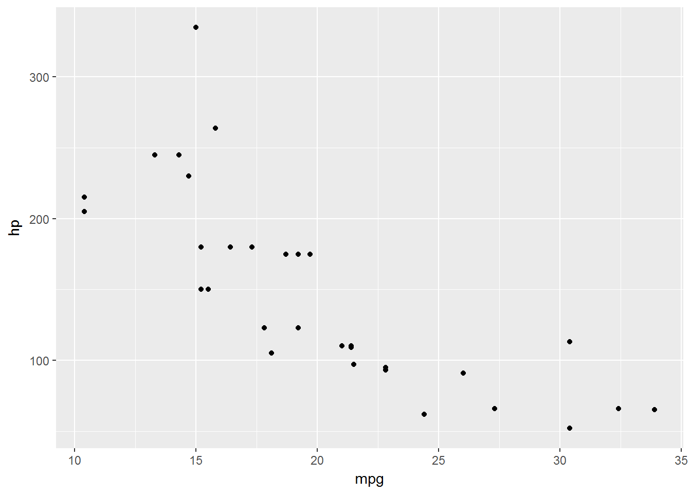
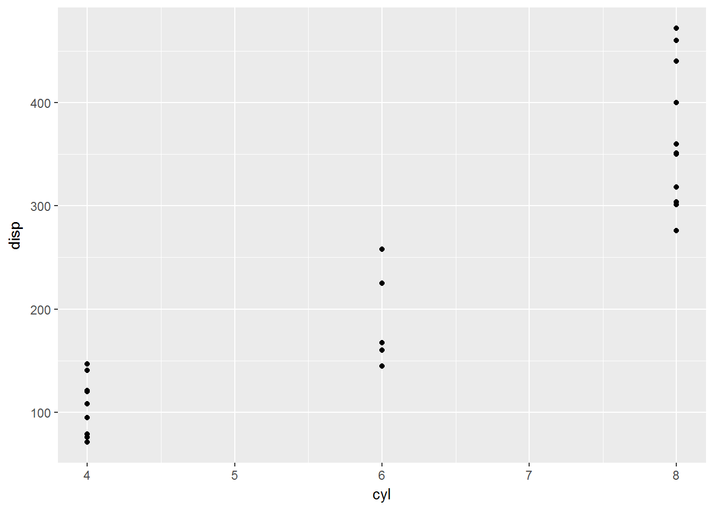
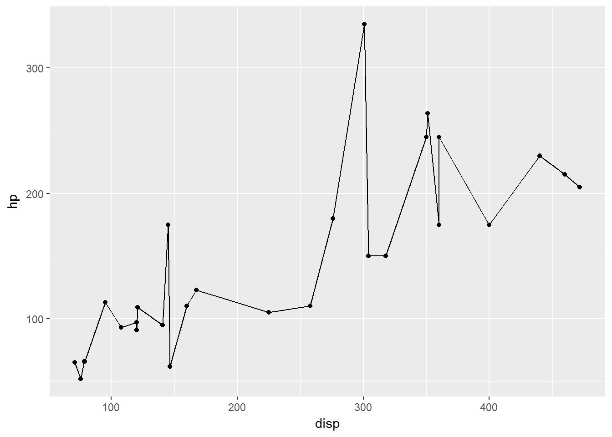
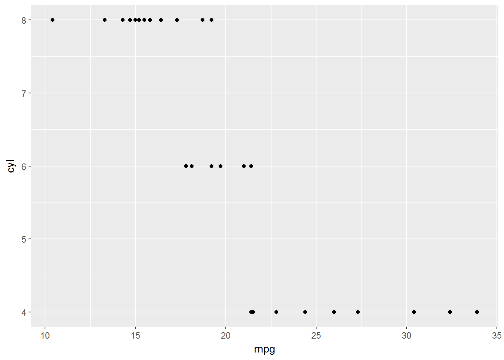
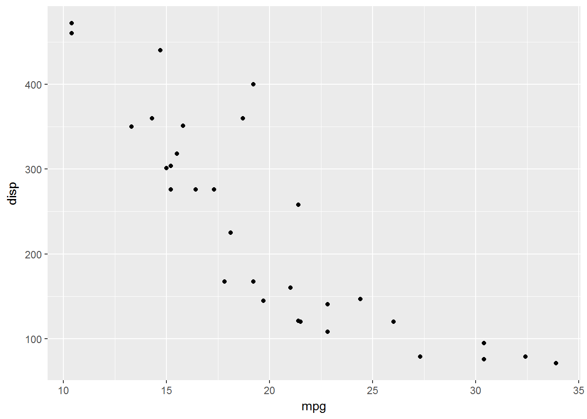
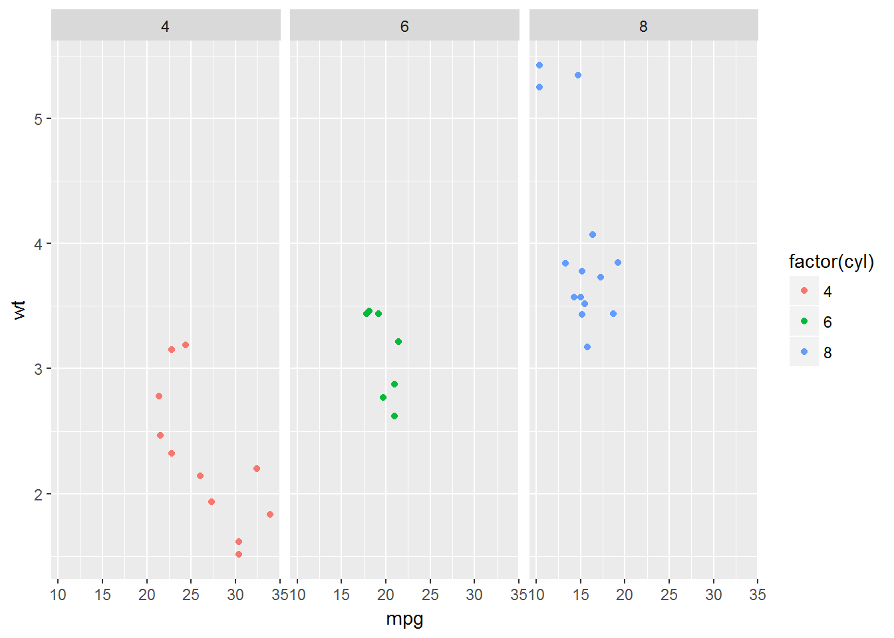
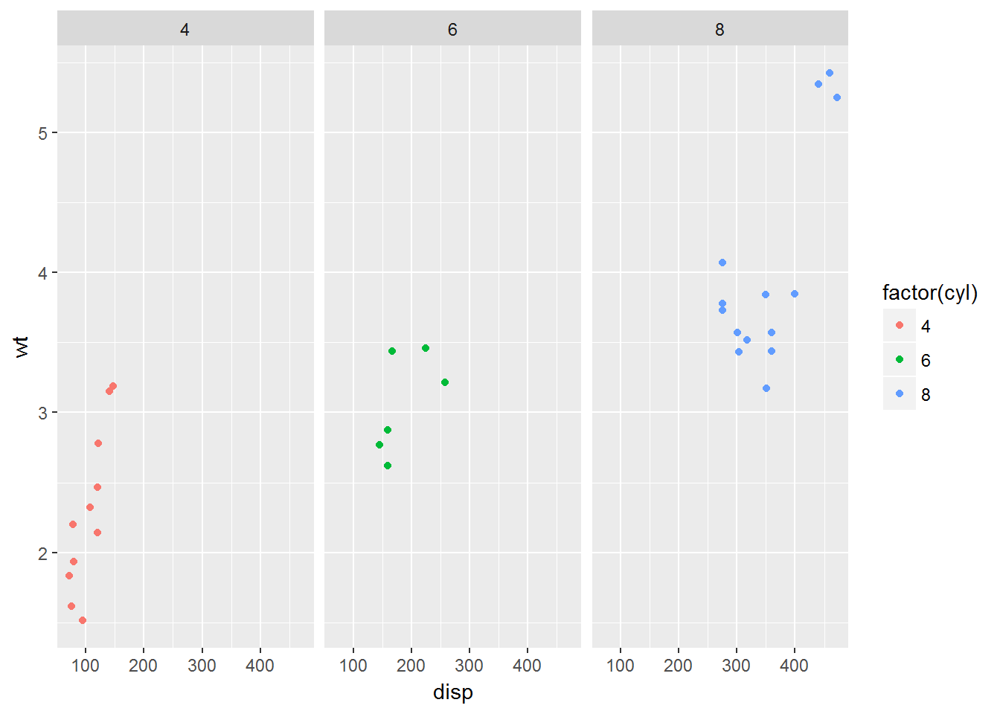
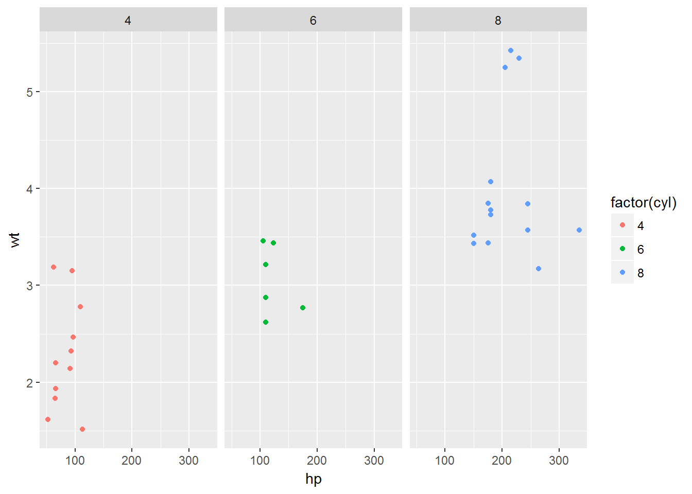

Overview
ggloop’s main function is ggloop(), and it allows the user to create one of two things:
- Multiple
ggplot2 plots.
- A list of aesthetics, which can used to make
ggplot2 plots using ggplot().
Instead of passing a single aesthetic (x, y, ...) to ggplot(), the user can pass multiple aesthetics by using a vector of aesthetics. “Remapping”" behaviors control how the x and y vectors are paired with one another, and they control how mutliple ... arguments are paired with one another.
The gg_obs argument controls the returned value: either ggplot2 plots or a list of aesthetics which can be used to make ggplot2 plots. gg_obs’s default value is TRUE, which instructs ggloop() to return plots. FALSE instructs ggloop() to return a list of aesthetics.
Main Functions
ggloop
Mimicry of ggplot()’s arguments (for the most part).
Args
-
data = Same as data
-
mappings = Same as mapping, except aes_loop() is used in place of aes(). There currently is no support for a “strings”-type function.
-
remap_xy = Controls the “remapping” behavior of the x and y vectors. Default = TRUE; other options include FALSE and NA.
-
TRUE = acts like expand.grid() except that exact duplicates (i.e. x <- mpg; y <- mpg) and unordered-pair duplicates (i.e. x <- mpg; y <- cyl and x <- cyl; y <- mpg) are removed.
-
FALSE = acts like R’s internal recycling mechanism, which replicates the shorter of the two vectors however many times necessary to pair with the longer vector.
-
NA = leaves an unpaired vector element unpaired (i.e. x = (mpg, wt, hp); y = (cyl, gear) produces x <- hp with no y mapping)
-
remap_dots = Controls the “remapping” behavior of the dots arguments. Default = FALSE; other option is FALSE.
-
TRUE = acts like R’s internal recycling mechanism, which replicates the shorter of the two vectors however many times necessary to pair with the longer vector.
-
FALSE = leaves un unpaired vecotr element unpaired; similar to remap_xy = NA behavior.
-
gg_obs = Controls the returned value. TRUE (default) returns ggplot2 plots; FALSE returns a list of aesthetics (see Value).
-
... = The same as ...; directly passed to ggplot().
-
environment = The same as environment; directly passed into ggplot().
Value
There are two main types of returned values when gg_obs = TRUE:
- A list of
ggplot2 plots - when no ... are specified in aes_loop().
- A nested list (a list of a list) of
ggplot2 plots - when there are ... specified in aes_loop().
aes_loop
Mimicry of ggplot()’s aes(), except:
- You can use
dplyr’s syntax to call variables (i.e. y = mpg:cyl, x = 1:5, etc). You can still use ggplot2’s syntax to call variables (i.e. x = disp, x = mpg/hp, color = factor(cyl), y = gear + cyl, etc). You can also use both within a vector, but do adhere to the rule below.
- If you are calling more than one variable, then you need to wrap the variables in
c() and not have any other c() within that wrapping (i.e. x = c(mpg:cyl, 5, 6:8, gear + cyl, mpg/hp), color = c(factor(cyl), factor(gear))).
Args
-
x = Same as x
-
y = Same as y
-
... = Same as ...
+.gglist
A + operator method for objects with class gglist (the returned objects of ggloop()). +.gglist will add features to plots in both:
- A list of
ggplot2 plots.
- A nested list (a list of a list) of
ggplot2 plots.
Users can +.gglist by calling +, like they would when using +.gg from the ggplot2 package. Much like +.gg, the results of +.gglist will not be saved unless the result is assigned.
Trivial Examples
Example 1
Example: Using the mtcars data set, create and plot all possible xy-pairs between mpg and hp.
Steps: Load the necessary packages, create plots with ggloop(), and add to plots using +.gglist.
library(ggplot2)
library(ggloop)
g <- ggloop(mtcars, aes_loop(x = mpg:hp, y = mpg:hp))
# View some plots
g$x.mpg_y.hp + geom_point()

g$x.cyl_y.disp + geom_point()

g$x.disp_y.hp + geom_point() + geom_line()

# Use `+.gglist` to add to two plots, save the output, and then display the results.
g[1:2] <- g[1:2] + geom_point()
g[1:2]
## $x.mpg_y.cyl

##
## $x.mpg_y.disp

##
## attr(,"class")
## [1] "gglist"
Look at the mappings of each name in g. Note how the list is NOT nested (because no ... were called in aes_loop()).
lapply(g, `[[`, "mapping")
## $x.mpg_y.cyl
## * x -> mpg
## * y -> cyl
##
## $x.mpg_y.disp
## * x -> mpg
## * y -> disp
##
## $x.mpg_y.hp
## * x -> mpg
## * y -> hp
##
## $x.cyl_y.disp
## * x -> cyl
## * y -> disp
##
## $x.cyl_y.hp
## * x -> cyl
## * y -> hp
##
## $x.disp_y.hp
## * x -> disp
## * y -> hp
Example 2
Example: Plot c(mpg, disp, hp) against wt and facet the resulting plots.
Steps: Create plots, add geoms, and add facet_grid().
g2 <- ggloop(mtcars, aes_loop(x = c(mpg, disp, hp), y = wt, color = factor(cyl))) +
geom_point() +
facet_grid(. ~ cyl)
# View some plots
g2$`color.factor(cyl)`[1:3]
## $x.mpg_y.wt

##
## $x.disp_y.wt

##
## $x.hp_y.wt

##
## attr(,"class")
## [1] "gglist"
# Look at the mappings of each name in `g2`. Note how the list is nested
# (because a `...` argument was called in `aes_loop()`).
lapply(g2, function(x) lapply(x, `[[`, "mapping"))
## $`color.factor(cyl)`
## $`color.factor(cyl)`$x.mpg_y.wt
## * x -> mpg
## * y -> wt
## * colour -> factor(cyl)
##
## $`color.factor(cyl)`$x.disp_y.wt
## * x -> disp
## * y -> wt
## * colour -> factor(cyl)
##
## $`color.factor(cyl)`$x.hp_y.wt
## * x -> hp
## * y -> wt
## * colour -> factor(cyl)
Example 3
Example: Return the list of aesthetics rather than the list of plots.
Steps: Call ggloop() with gg_obs = FALSE.
g3 <- ggloop(mtcars,
aes_loop(x = c(mpg, disp, hp), y = wt, color = c(factor(cyl), factor(gear))),
gg_obs = FALSE)
print(g3)
## [[1]]
## [[1]][[1]]
## * x -> mpg
## * y -> wt
## * colour -> factor(cyl)
##
## [[1]][[2]]
## * x -> disp
## * y -> wt
## * colour -> factor(cyl)
##
## [[1]][[3]]
## * x -> hp
## * y -> wt
## * colour -> factor(cyl)
##
##
## [[2]]
## [[2]][[1]]
## * x -> mpg
## * y -> wt
## * colour -> factor(gear)
##
## [[2]][[2]]
## * x -> disp
## * y -> wt
## * colour -> factor(gear)
##
## [[2]][[3]]
## * x -> hp
## * y -> wt
## * colour -> factor(gear)